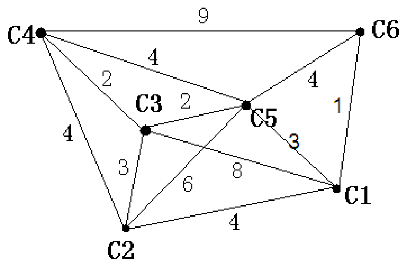
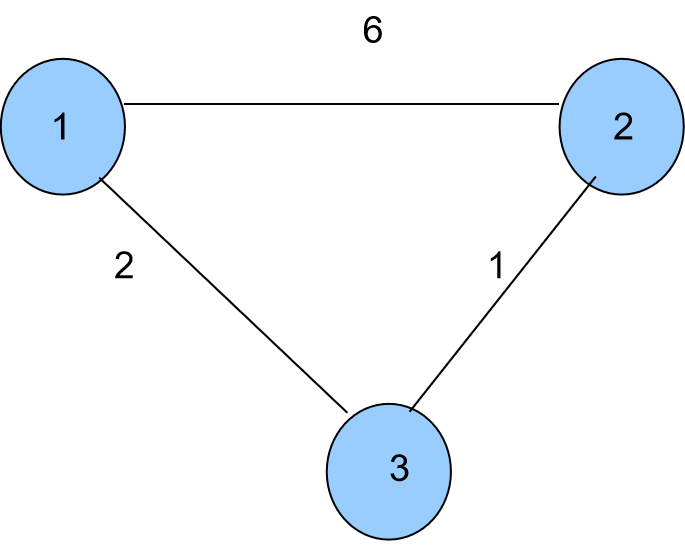
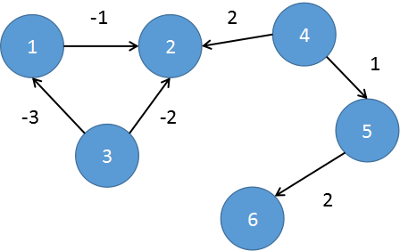
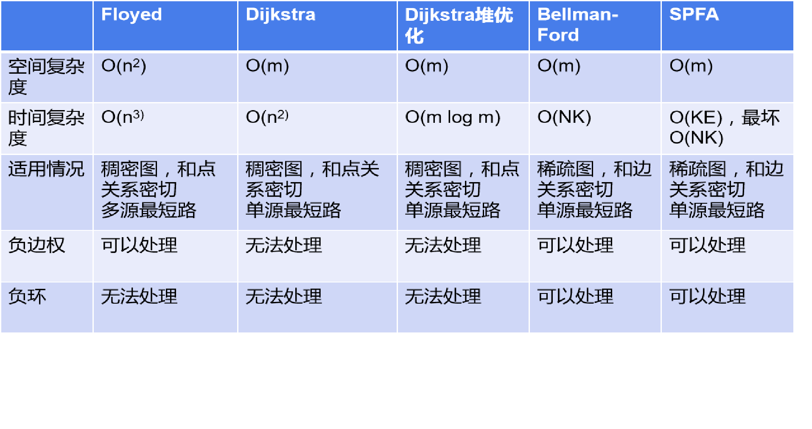

如下图所示，我们把边带有权值的图称为带权图。边的权值可以理解为两点之间的距离。一张图中任意两点间会有不同的路径相连。最短路就是指连接两点的这些路径中最短的一条。

对于所有求最短路的算法，都是基于一个最基础的思想，那就是：松弛。
什么叫松弛呢？简单的说，就是刷新最短路。
那，怎么刷新呢？我们想，能刷新最短路的有啥？就是用最短路（边也可能是最短路）。要用魔法打败魔法
以下图为例，点1到点3的距离是2，点3到点2的距离是1，而图中1到2的距离是6，那么，很明显点1到点3到点2比点1直接到点2短得多，那么，我们的最短路dis[1][2]就等于dis[1][3]+dis[3][2]。我们可以这么理解：1到3这条边的边权已经是1到3的最短路了，同样，2到3也是，那我们就可以用这两条最短路来刷新1到2的最短路，这就是用最短路来松弛最短路了。

1、Floyed:
学过最短路的人，大多数都会认为：Floyed就是暴力，简单粗暴，简单得很。其实，如果你仔细品读这个算法，会发现：虽然代码简单，但是其思想却非常的巧妙！
我们来分析一下：
我们要求最短路，我们需要通过中转点来进行松弛，那我们要怎么找中转点呢？
显然，必须得枚举。那，怎么枚举呢？我们自己画画图就知道，一些最短路可以拐来拐去，也就是中转点有很多，那我们怎么枚举？这就是Floyed的巧妙之处，它用到的是动态规划的思想。
对于规模很大的问题，我们的一般策略应该是：缩小规模。不管它可能有多少个，我们慢慢从少往多推。
假设我们现在不允许有中转点，那么各个点之间的最短路应该是题目给出来的边权。
现在我们只允许通过1号节点来进行转移，注意是1号而不是1个，如果讨论个数的话其实就回到了我们上面的问题：“怎么枚举？”。现在我们只需要枚举i和j，比较dis[i][1]+dis[1][j]和dis[i][j]的大小，如果小于则刷新，这就是松弛。注意这里i不一定小于j，我们现在的对象是图，图描述的是元素间的网状关系，不同于顺序表描述的顺序关系。
接着，我们允许通过1号点和2号点进行转移，注意这里的“和”，一方面，2号点本身可以独自松弛一些路径，另一方面，之前通过1号点松弛的一些路径中，可能有和2号点连着的，什么意思呢？比如说，在上一轮我们用dis[5][1]+dis[1][2]松弛了dis[5][2]，然后我们再用这个路径去松弛其他路径，实际上就相当于通过1号点和2号点进行转移，所以我们的条件是“允许通过1号点和2号点”，这也就解决了我们的问题：“怎么找中转点？”。不必考虑中转点的数量，用编号更大的点做中转点时，实际上也包含了编号小的中转点。
所以，这里我们仍然只需要枚举i和j，用dis[i][2]+dis[2][j]去尝试松弛dis[i][j]就行了，这里的中转点我们可以用k来表示。
所以，我们需要三重循环：第一重枚举中转点，k=1~n，第二重就是起点i，也是从1~n，第三重终点j也是一样的，这里的k循环一定要在最外层，如果不在最外层，就有可能将k号点可以松弛的边漏掉，影响结果。在循环最里面判断dis[i][k]+dis[k][j]是否比dis[i][j]来的优，是的话则更新，这就是Floyed算法的实现。
核心代码：
for(k=1;k<=n;k++)
for(i=1;i<=n;i++)
for(j=1;j<=n;j++)
if(dis[i][j]>dis[i][k]+dis[k][j])
dis[i][j]=dis[i][k]+dis[k][j];
根据这种算法，我们还需注意初始化的问题：题目没有给出连边的两个点应该初始化为无穷大，这样才能满足我们的判断条件，另外一个点到它本身的距离应该初始化为0，也是为了满足判断条件，因为中转点可能在起点或终点上。
Floyed的时间复杂度很明显：就是O(n3)，它的功能非常强大，根据代码我们可以发现：它可以求出任意两点之间的最短路，而且码量极小，可以处理所有情况的边权，但有一点：它无法处理负环，这个我们将结合Bellman-Ford一起说。它的劣势也十分明显：时间复杂度太高，只能处理n极小的图。那我们能不能进行优化呢？
答案是不行。所谓的优化，其实就是减少没必要的操作，但是对于这个算法，你可以在中间某一层循环结束后结束算法吗？不可以。我们的Floyed的松弛操作是通过枚举进行的，也就是无法保证最优，那能不能判断一下，当前这个k循环里有没有进行过松弛，如果没进行过就退出呢？
仔细想一想，这是一张图，你当前这个点没有用，不代表它后面的点也没有用，这只是编号的大小顺序而已，所以，无法优化。那，n如果稍微大一点，不就炸掉了？所以，我们来讲另外一种算法。
2、Dijkstra：
我们上面提到，Floyed慢的原因是它无法保证求得的最短路一定是最优的，那我们能不能保证每次求得最短路是最优的呢？肯定可以，但是，这时候我们的求的只能是一个点到其它点的最短路，因为你无法保证每一个点都能在某一轮找到与别的点的最短路，这就是Floyed的问题。求一个点到其它点的最短路的问题，称为单源最短路问题。Floyed处理的就是多源最短路问题。顺便说一下，Floyed是处理多源最短路的最优算法，也是我们的不二选择。所以，以下的算法都是求单源最短路的算法。
有了这样分析的基础，我们不难想到：用dis[i]记录i到源点（我们不妨称为x）的最短路，那么一开始，我们得到了许多由x连出的边，那我们想要得到一个不会再改变的最短路，也就是一个确定的dis[i]，我们怎么做？这里就要用到贪心的策略。不再改变，意味着无法进行松弛，那什么样的情况下dis[i]无法再进行松弛了呢？那就是不存在一个k使得dis[k]+l[k][i]（l表示边长）<dis[i]，也就是说，没有点可以转移这条路径，那说明这个i到x的距离一定是最短的，也就是dis[i]是所有dis[]中最小的，这样一定能保证这条路径是最短的，所以，我们需要找到一个dis[i]最小的点i，那么它到x的最短路已经确定了，我们拿它来进行松弛。这样，每一轮都可以确定一个点到源点x的最短路，只要经过n-1轮，我们就得到了任意一点到源点的最短路。
另外还要注意，我们已经求得最短路的点，我们还有必要再去管它吗？显然没有。也就是说，在找点的时候，我们要找的应该是还没有求得最短路的点，不然如果你这个点的最短路是全图最短路里最短的，那不是一直选你，然后做无用的重复判断？所以，我们还需要一个数组f[]来记录点i是否已求得最短路，f[i]=1表示已求得，f[i]=0表示未求得。
那么，实现的话，我们需要一层i来枚举还剩下的点数，i=1~n-1，里面要有一个j=1~n来找离源点最近的点t，然后标记f[t]，再用t来尝试进行松弛操作，还需要一次j循环。
核心代码：
for(i=1;i<=n-1;i++)
{
int t,minn=100000001;
for(j=1;j<=n;j++)
if(f[i]==0&&dis[j]<minn)
{
minn=dis[j];
t=j;
}
f[t]=1;
for(j=first[t];j;j=a[j].next)
if(dis[a[j].to]>dis[t]+a[j].len)
dis[a[j].to]=dis[t]+a[j].len;
}这里采用邻接表来存储，其优点不必阐述。另外，这里f[]要先初始化为0，然后dis[]初始化为无穷大，很好理解，另外要在题目给出的边中先初始化一些源点有连边的dis[i]=l[x][i]。f[x]=1，因为源点到本身的距离已经确定，也就带来了dis[x]=0。
总共要进行n-1次循环，时间复杂度为O(n)，内部又有找点的操作，时间复杂度为O(n)，所以Dijkstra算法的时间复杂度为O(n2)，比Floyed快飞了。
但实际上，Dijkstra只有比Floyed快这一优势，而且还不是因为它算法比较优秀，只是因为它减少了起点的枚举。而且，它只能求单源最短路，而且还不能处理负边权和负环。什么是负边权呢？负边权，顾名思义就是边权为负，那为什么Dijkstra不能处理呢？Dijkstra的策略是每次保证求得一条最短路，那你现在有了负边权，就无法保证我找到的距离源点最近的点一定是最近的了，那这个算法就废了。Floyed就可以解决这样的问题，因为它不管你的边权是什么样的，只管算就好了，不像Dijkstra有那样的要求，它只要保证最优子结构，你边权的正负并不会影响它的最优。
当然，这个算法还是可以优化的。我们要找一个距离源点最近的，那我们一定要一个一个去找吗？我们看到，这个最近的值是在一个区间里被挑出来的，那我们不难想到用堆来维护这个区间。这个堆的关键字是点到源点的距离，但是我们还要记点的编号，因为一会儿还要用点来进行松弛。取堆顶的点，用这个点尝试一波松弛，在这过程中，我们如果发现了被松弛的路径，那么这个终点就要入堆，因为被松弛意味着它到源点的距离变了，我们当然要把它入堆去和其它的点作比较。那么这种情况下，我们的初始化就只要将源点和0入堆就行了，不需要额外做dis[i]=w[x][i]，因为现在dis[i]是可以通过dis[x]+w[x][i]算出来的。
这里会出现一个点在堆中出现多次的问题，不必担心，这并不会影响我们的结果。因为堆中虽然有相同点，但堆中存储的它们到源点的距离一定各不相同，那么在进行松弛时，选的一定是最优的那一条路径，也就是dis最小的那一个，那么剩下就是多余的，会随着不断的取堆顶的操作一个个被清除，不必再单独考虑。
核心代码：
struct node
{
int id,len;
};//堆的类型
node heap[1000001];
//堆要开大一点，一点可能在堆里重复出现
void put(node x)//入堆
//入堆的元素要和堆保持同一类型
{
int now,next;
node t;
heap[++top]=(node)x;
now=top;
while(now>1)
{
next=now/2;
if(heap[next].cnt<=heap[now].cnt)return;
t=(node)heap[next];
heap[next]=(node)heap[now];
heap[now]=(node)t;
now=next;
}
}
int get()//取堆顶元素的编号并删除
{
int now,next,x;
node t;
x=heap[1].id;
heap[1]=(node)heap[top--];
now=1;
while(now*2<=top)
{
next=now*2;
if(heap[next].cnt>heap[next+1].cnt&&next<top)next++;
if(heap[now].cnt<=heap[next].cnt)break;
t=(node)heap[now];
heap[now]=(node)heap[next];
heap[next]=(node)t;
now=next;
}
return x;
}
void add()......//存边
void dijkstra()
{
int i;
for(i=1;i<=n;i++)dis[i]=1000000001;
dis[A]=0;
top=1;
heap[1].id=A;
heap[1].cnt=dis[A];
while(top!=0)
{
int t=get();
for(i=first[t];i;i=a[i].last)
{
if(dis[a[i].to]>dis[t]+a[i].len)
{
dis[a[i].to]=dis[t]+a[i].len;
put((node){a[i].to,dis[a[i].to]});
}
}
}
}3、Bellman-Ford：
我们上面一直着重于找一个中转点来进行松弛，我们能不能不管中转点呢？当然可以。我们之前的策略是，找一个中转点，然后用它连的边实现松弛。我们现在不用中转点，那就简单点，直接找边，那我怎么知道要选哪条边？实际上你也无法知道。因为这不满足最优子结构。那，我们不妨把所有边的试一遍，实际上这不能称之为“边”，而应该称其为“路径”，你不可能拿几条边在那里一直玩，这里需要呈现出一个结构，一条条的边组成了路径。我们每次拿我们已知的可能的最短路径dis[k]来进行松弛：如果dis[k]+w[k][j]<dis[j]，刷新dis[j]，k是源点到每一个的最短路径“估计值”。那，这样一轮下来，我们可以得到一些新的最短路径，我们再利用这些最短路径来松弛，又可以得到新的最短路径，通过这样的方式一层一层建立起整个最短路的结构。那，这样的操作要进行多少轮呢？这就要看一个最短路中最多会包含几条边了。最多几条呢？不难想到，n个点的图，最短路径上最多有n-1条边。我们知道，连接n个点只需要n-1条边，再多了就会形成环，那环有没有可能是最短路呢？
不可能。假如我们这张图不存在负环，那重复走路肯定不优。如果存在负环呢？那我们就可以一直绕圈圈，就不存在最短路了。那，是不是这张图都没有最短路了呢？不是！只有可以到达负环的点才不存在最短路。

如图所示，对于在负环上及可以到达负环的点①②③④，都不存在最短路径，但是⑤却有一个最短路径：⑤->⑥的最短路径为2。为什么说④也没有最短路径呢？因为它可以到达负环，那它走的所有路径都可以先去负环里面多转几圈，只要进了负环里，就没有最短路了。因此，只要存在最短路径，那么最多经过n-1轮，一定可以求出所有的最短路径。
核心代码：
for(i=1;i<=n-1;i++)
for(k=1;k<=n;k++)
if(dis[u[i]]+w[i]<dis[v[i]])
dis[v[i]]=dis[u[i]]+w[i];这里因为主要涉及对单个边的操作，我们采用少见的边集数组，记录单个边的信息。i表示当前边的编号，u[i]表示这条边的起点，v[i]表示这条边的终点，w[i]表示这条边的权值（边权）。那么，刚才讲了什么事负环，还没讲怎么处理负环。Bellman-Ford处理负环非常简单，只要在n-1轮结束后判断一下：是否还能再进行松弛操作，也就是判断是否还有dis[v[i]]>dis[u[i]]+w[i]，如果有，那就说明这个源点会到到达一个负环，那对于这个源点就不存在最短路了。实际上，到了提高组，我们需要对负环做出处理，这就需要用到我们的Bellman-Ford来实现了，这里不必阐述。
那，Floyed为什么没法处理负环呢？实际上，Floyed也可以处理一些负环，关键是这个点必须在负环上。用Floyed我们可以直接表示环，就是dis[i][i]，如果dis[i][i]<0，我们知道，Floyed的dis[i][i]初始化都是为0，那就说明，出现了负环，且这个点就在负环上。但是，如果这个点不在负环上，但它可到达负环，那Floyed就无法识别了，因为如果这个点不在负环上的话，它可以到负环，但是反过来，负环不一定可以到这个点，如果我的边是单向的，那不可能找到一个中转点来实现这个点到负环的最短路的松弛，因为从负环到这个点的长度是无限大，那这个dis[i][i]就是恒为0。当然，如果这张图是无向图，那Floyed也是可以处理负环的。
小优化：其实不难发现，有时候我们并不需要经过n-1轮才能求得结果，所以，我们可以在一轮结束以后判断：当前这一轮进行松弛，如果有，那才有继续下一轮的必要，如果没有，那就可以提前退出了，因为你已经没有任何一条路径可以再进行松弛了，你再下一轮只是再进行一论完全相同的操作，实在是没有必要。
4、SPFA：
根据我们上面的小优化，我们其实可以再进行一个大的优化。小优化说的是，出现被松弛过的路径，才有松弛成功的可能。如果一条路径已经无法松弛，那对于这个算法而言，这条路径就没用了。那么，我们怎么判断哪些最短路径被松弛过了呢？这样就不能看边了，而应该看点。如果dis[i]刷新了，那么说明这个i可以为我们接下来的松弛提供帮助，我们应该将它记录起来。一个点是可以松弛很多路径的，也就是会拓展出很多点，然后我们取出记录的第一个点，用这个点继续重复上面的操作：判断dis[i]是否大于dis[t]+w[t][i]，这里的t代表松弛的中转点，然后继续拓展节点，记录，最后把当前进行松弛的点删掉。取第一个，拓展，删除第一个，再取第一个，拓展，再删除，我们可以用队列来实现这一过程，因此SPFA也被称为是Bellman-Ford的队列优化。
还要注意一点，这个队列里的元素是可以重复入队的，因为一个点的最短路径可以不断更新。另外，当一个点已经在队列里的时候，我们是不用将它入队的，因为我们记录这个点的目的是等会要使用它，所以我们记的是它的编号，这里一定要和Dijkstra堆优化分清楚，Dijkstra需要的是它的路径长度，我们这里不需要，所以就算这个点的最短路径中间可能会变，但是不影响我们的结果，我们只需要记住这个点可能可以作为松弛的中转点，也就是我们可以用它进行松弛，就够了。
核心代码：
int head=0,tail=1;
q[head]=x;
f[x]=1;
dis[x]=0;
while(head<tail)
{
int i,t=q[head];
for(i=first[t];i;i=a[i].next)
if(dis[a[i].to]>dis[t]+a[i].len)
{
dis[a[i].to]=dis[t]+a[i].len;
if(f[a[i].to]==0)q[++tail]=a[i].to;
}
f[q[head]]=0;
head++;
}初始化的时候，我们需要将x入q数组，还要给x打上标记。对于dis[]，依旧不需要初始化dis[i]，但我们需要初始化dis[x]=0，不然我们无法用x进行松弛。至于为什么出队要放后面，这个是根据代码来定的，我们一开始的x存在q[head]里，所以要先处理完再出队，如果一开始x存在q[tail]里，那这个出队操作就要放在最前面了。
既然SPFA是Bellman-Ford的优化，那么Bellman-Ford能实现的功能SPFA也都能实现。负的边权正常算，如何判断负环呢？一条最短路径上的边不会超过n-1条，反之，一条最短路径上的点也不会超过n个，所以，我们可以用一个count数组来记录元店到结点的最短路上结点的数量，如果一个点到源点的最短路上结点的数目大于n个，说明出现了环，这个环一定是负环。这种方法在我们用队列实现SPFA时使用。
什么？难道还能用其他方法实现吗？SPFA的过程，说白了实际上是一个搜索的过程。为什么这样说呢，我们每一次取一个被松弛的点，用这个点松弛其他的点，再用松弛成功的点进行同样的操作，很想一个点分支出来很多点，每一个分支点有分支出来很多点，而我们求最短路的过程实际上就是将这些点按顺序全部访问一遍的过程，这不就是搜索吗？那么，我们的搜索有深搜和广搜，用队列实现的是广搜，那么另一种自然是用栈实现的深搜了，只不过我们常用广搜来实现。
深搜的过程自己脑海里走一遍就好了，现在关键在于：我们如何判断负环？我们知道，深搜有一个非常关键的步骤：标记。那么按照常理，我们在搜索的时候遇到被标记过的结点应该忽略，但在这里，如果我们遇到被标记过的结点，说明这个点当前最短路上出现了不止一次，这就出现了负环。这种方法不常用，但我们需要了解一下，懂得其中牵扯到的过往的知识。
以上两种方法请自己尝试实现，如有困难可以参考SPFA判负环
一些教材上有写道一种判断的方法：如果一个点入队次数超过n，那么存在负环。这种方法请大家不要使用！我们首先来分析一下：为什么要找入队次数呢？这一点我很不理解。我们入队的目的是为了下一次取其中的点来进行松弛操作，入队的次数是没有任何意义的！可能有的同学会这么认为：入队就是被松弛了，那被松弛了就会入队。这种想法存在两个问题：我们不管入队的问题，一个点被松弛，肯定是由其它的点来进行的，可不可以是它本身呢？一般来说，一个点到自己的距离都为0，这样肯定是松弛不了的，有一些题目，它可能输入一条自己到自己的边，边权还为负数，这就还可能通过本身来松弛。但是，这种情况下就是负环了！所以我们可以不管这种情况。一般情况下，一个点最多能被n-1个点松弛，但是特殊情况，它可以被n个点松弛，但这种情况就是负环，所以我们可以得出结论：一个点被松弛的次数如果超过n-1，就存在负环。但是，这里又有问题了，我可以有重边啊！那一个点可能被同一个点松弛了不止一次，这种方法就错了。
另外，一个点被松弛了，不代表它就会入队，因为可能它已经在队列里了，那这时候它就不能入队，这又有问题了，所以建议大家不要使用这种方法。
题目：P3385 【模板】负环
各算法的对比：
